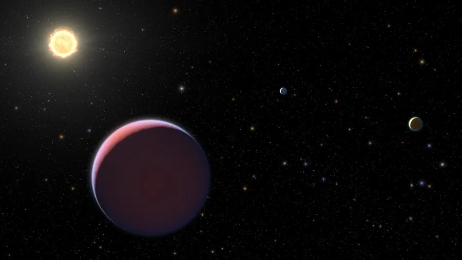

December 2019
Kepler-51: planets with the density of cotton candy
The planets of the star Kepler-51 are almost as large as Jupiter but have only a few Earth masses – about one hundredth of Jupiter's mass. Hubble observations of planets b and d confirmed this extremely low density in 2019. One reason is thought to be the young age of the system, only about 500 million years.
In 2024 a fourth planet was added: during an observation with the James Webb telescope, Kepler-51 d passed in front of the star two hours earlier than calculated. The best explanation is another planet, Kepler-51 e, with an orbital period of probably about 264 days. Whether it is equally puffed up is unknown.
Sources: ESA/Hubble: "Hubble Probes Cotton Candy Planets.", 2019-12-23; Penn State, Center for Exoplanets and Habitable Worlds: "New planet in Kepler-51 system discovered using James Webb Space Telescope.", 2024-12-03